Issue #10 · Consolidated visual comparison Corrected deployment: https://chatgun.social1873fd3c9aae5a0efc26fef47b98753d8fa31308
Reference: immutable NEAR commit 98bb83e44bf88eddb9822d7875f18cd4fe833ee2, running from an isolated archive. Both apps use the same approved public fictional fixture through a browser-only adapter. No staging data is copied or mutated. Compare 390×844, 768×1024 and 1440×1100.
Red diagnostic pixels include expected branding, missing Game, timestamps and safety additions. No claim of literal 100% pixel identity. Protected acceptance/onboarding/account/Admin states are separately labelled browser fixtures in the report .
discovery · 390px Canonical column count, card dimensions, crop, gradient and compact tools restored. ChatGun logo, fictional distance labels and no Game are intentional.
Canonical NEAR v91 — rendered source, shared public fiction 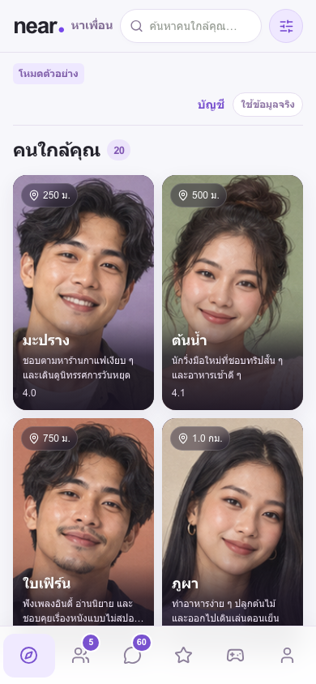
Production BEFORE — live capture Corrected ChatGun — browser capture Pixel diagnostics: 12.89% unmasked pixels differ; not a parity score friends · 390px Portrait-based requests and Friends restored; 5 requests and 10 friendships retained.
Canonical NEAR v91 — rendered source, shared public fiction 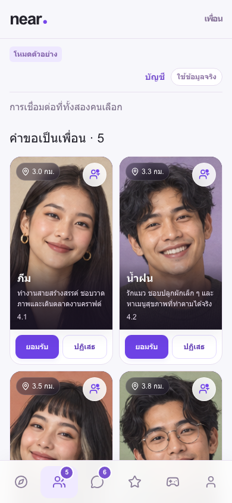
Production BEFORE — live capture Corrected ChatGun — browser capture Pixel diagnostics: 19.43% unmasked pixels differ; not a parity score inbox · 390px Single inbox, circular portraits, preview and unread state; no two-pane dashboard.
Canonical NEAR v91 — rendered source, shared public fiction Production BEFORE — live capture Corrected ChatGun — browser capture Pixel diagnostics: 16.00% unmasked pixels differ; not a parity score chat · 390px Full-height thread, safety disclosure and composer above fixed navigation.
Canonical NEAR v91 — rendered source, shared public fiction Production BEFORE — live capture Corrected ChatGun — browser capture Pixel diagnostics: 30.61% unmasked pixels differ; not a parity score
profile · 390px Canonical compact profile form plus required safety/notification controls.
Pixel diagnostics: 8.50% unmasked pixels differ; not a parity score reviews · 390px Private review hierarchy and ordered cards; no public disclosure of review contents.
Canonical NEAR v91 — rendered source, shared public fiction 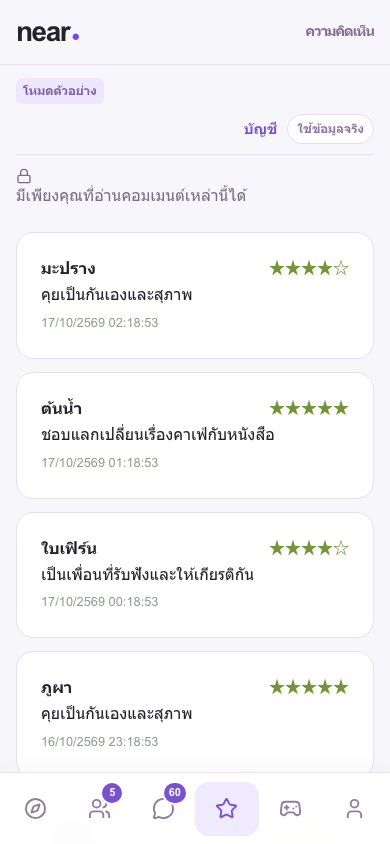
Production BEFORE — live capture Corrected ChatGun — browser capture Pixel diagnostics: 10.42% unmasked pixels differ; not a parity score member-profile · 390px Full-bleed portrait, original shade/facts/interests/actions. Safety controls separated; content kept above navigation.
Canonical NEAR v91 — rendered source, shared public fiction 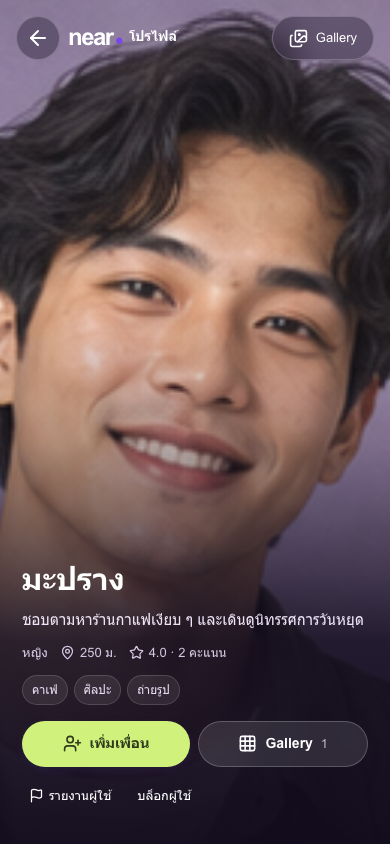
Production BEFORE — live capture Corrected ChatGun — browser capture Pixel diagnostics: 24.98% unmasked pixels differ; not a parity score member-gallery · 390px Gallery summary, portrait, facts, interest chips and three-column tiles restored.
Canonical NEAR v91 — rendered source, shared public fiction Production BEFORE — live capture Corrected ChatGun — browser capture Pixel diagnostics: 7.43% unmasked pixels differ; not a parity score
gallery-post · 390px Original post owner/image/social/navigation composition; private-comment and synthetic notices preserved.
Canonical NEAR v91 — rendered source, shared public fiction 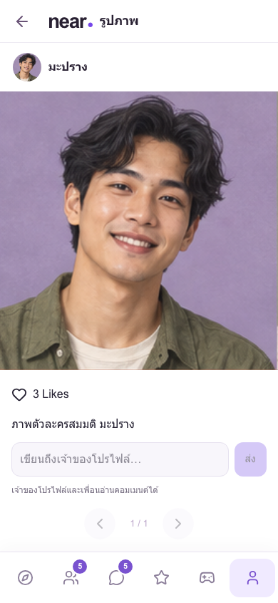
Production BEFORE — live capture 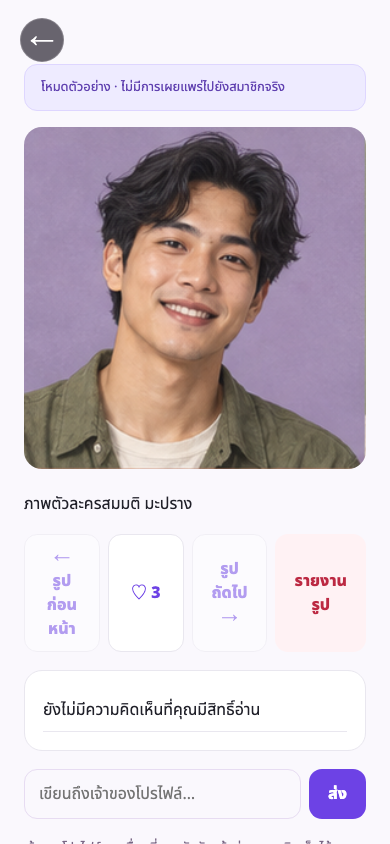
Corrected ChatGun — browser capture Pixel diagnostics: 6.10% unmasked pixels differ; not a parity score 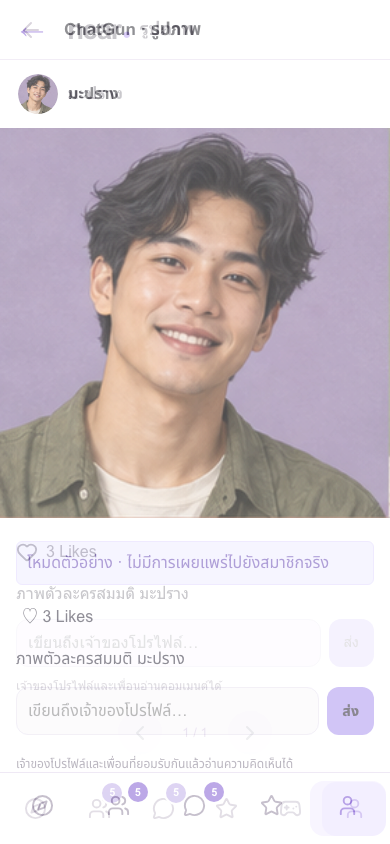
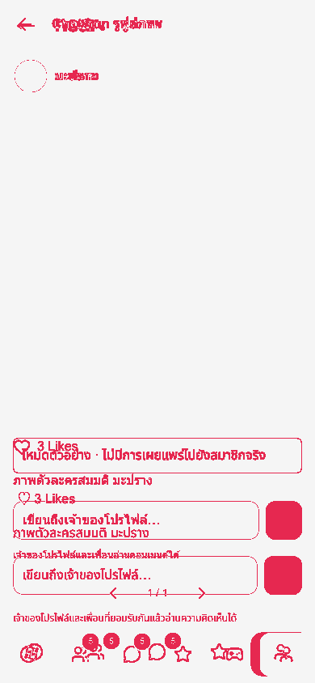
login · 390px Canonical auth shell, typography and canvas. Three OAuth providers replace original ChatGPT login; real Production OAuth remains gated.
Canonical NEAR v91 — rendered source, shared public fiction Production BEFORE — live capture Corrected ChatGun — browser capture Pixel diagnostics: 13.21% unmasked pixels differ; not a parity score
register · 390px Different workflows: NEAR registration vs ChatGun post-OAuth acceptance. These are not pixel-equivalent states.
Canonical NEAR v91 — rendered source, shared public fiction Production BEFORE — live capture Corrected ChatGun — browser capture Pixel diagnostics: 12.84% unmasked pixels differ; not a parity score
search-empty · 390px Original empty-state placement with a working clear-filters action.
Canonical NEAR v91 — rendered source, shared public fiction Production BEFORE — live capture Corrected ChatGun — browser capture Pixel diagnostics: 14.66% unmasked pixels differ; not a parity score filters · 390px Canonical centred responsive filter dialog; keyboard Escape and focus handling.
Canonical NEAR v91 — rendered source, shared public fiction Production BEFORE — live capture 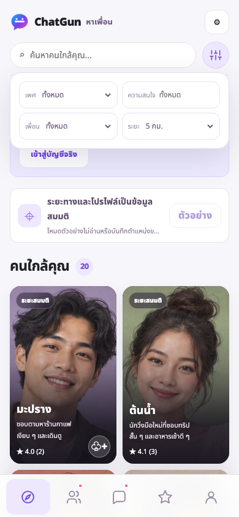
Corrected ChatGun — browser capture Pixel diagnostics: 16.27% unmasked pixels differ; not a parity score friends-empty · 390px Empty relationship state; no original or staging records removed.
Canonical NEAR v91 — rendered source, shared public fiction 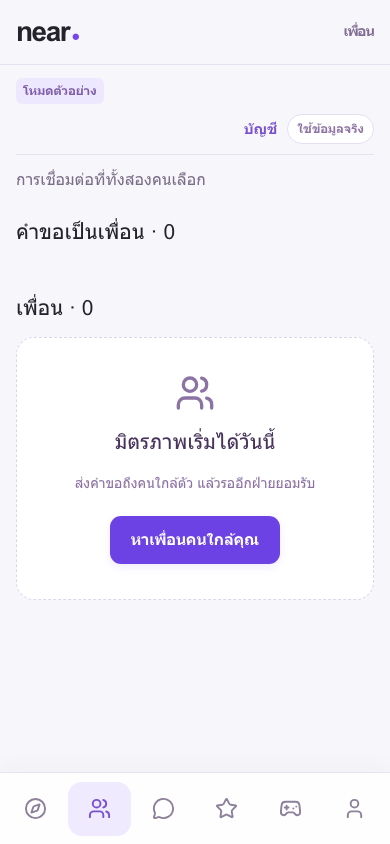
Production BEFORE — live capture Corrected ChatGun — browser capture 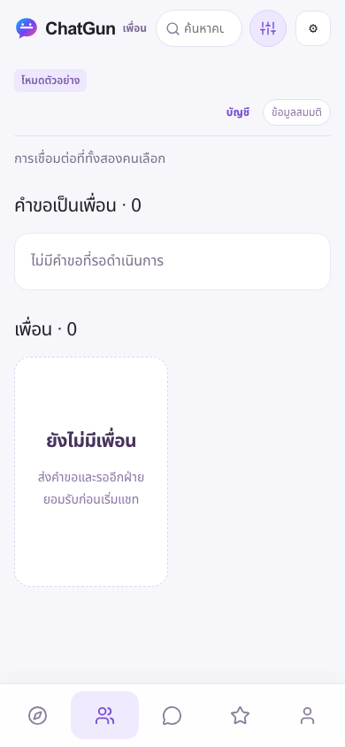
Pixel diagnostics: 7.38% unmasked pixels differ; not a parity score 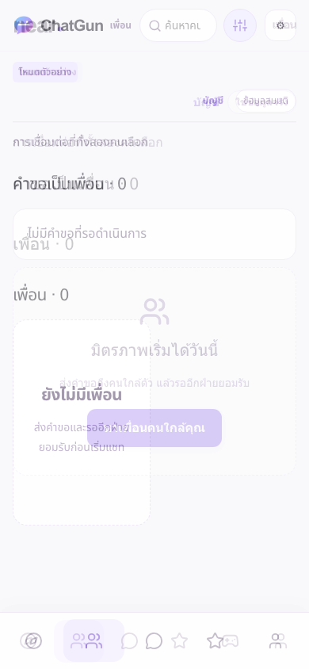
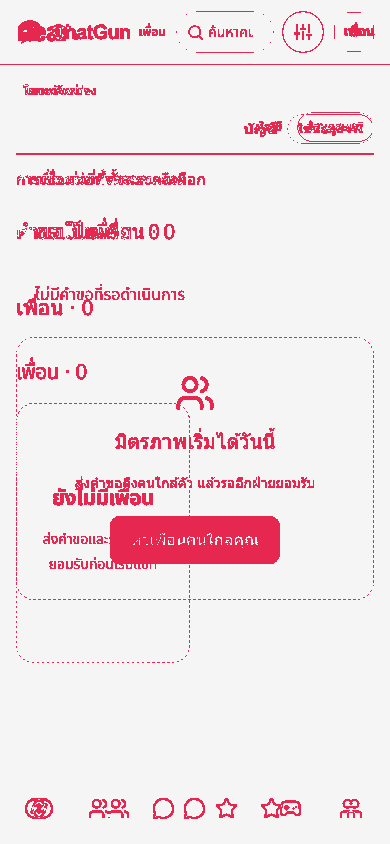
inbox-empty · 390px Empty inbox state in isolated browser fiction.
Canonical NEAR v91 — rendered source, shared public fiction Production BEFORE — live capture 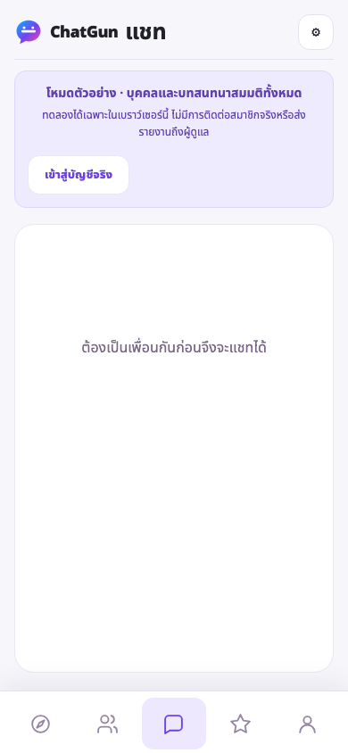
Corrected ChatGun — browser capture Pixel diagnostics: 2.77% unmasked pixels differ; not a parity score
reviews-empty · 390px Private reviews empty state.
Canonical NEAR v91 — rendered source, shared public fiction 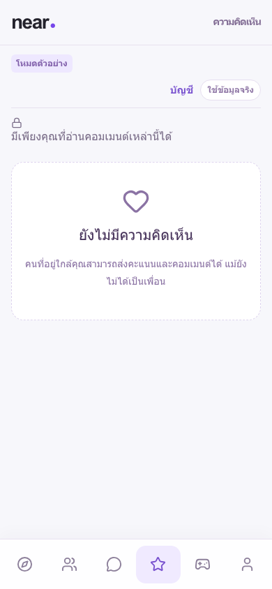
Production BEFORE — live capture Corrected ChatGun — browser capture 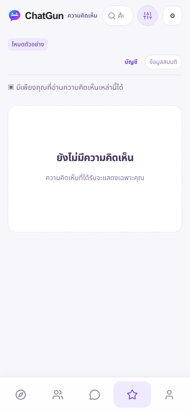
Pixel diagnostics: 5.02% unmasked pixels differ; not a parity score own-gallery-empty · 390px Empty own-gallery/settings fixture, no stored media removed.
Canonical NEAR v91 — rendered source, shared public fiction 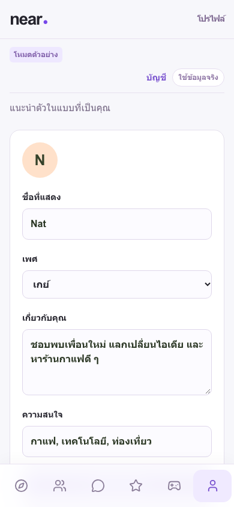
Production BEFORE — live capture Corrected ChatGun — browser capture Pixel diagnostics: 9.42% unmasked pixels differ; not a parity score offline · 390px Offline notification and recovery; browser-only fixture.
Canonical NEAR v91 — rendered source, shared public fiction 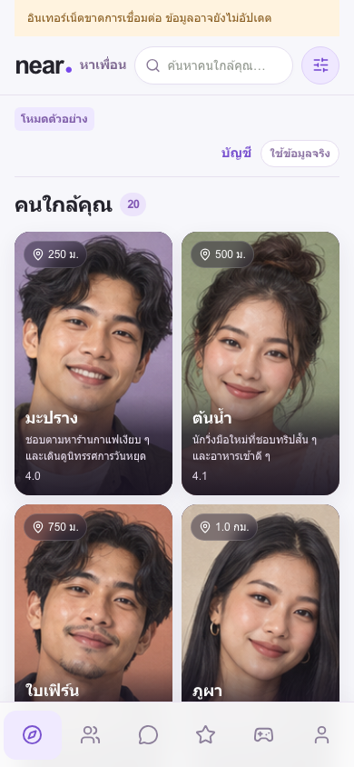
Production BEFORE — live capture 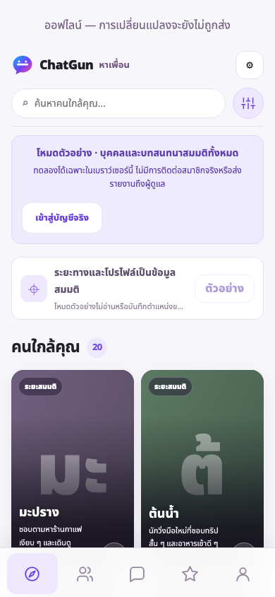
Corrected ChatGun — browser capture Pixel diagnostics: 56.26% unmasked pixels differ; not a parity score upload-photos · 390px Dedicated profile/gallery image management route restored; ChatGun quota and moderation disclosures retained.
Canonical NEAR v91 — rendered source, shared public fiction Production BEFORE — live capture 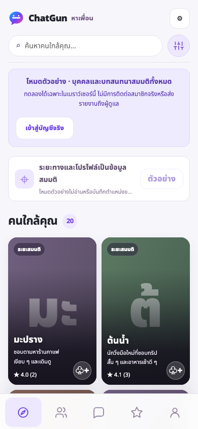
Corrected ChatGun — browser capture Pixel diagnostics: 9.42% unmasked pixels differ; not a parity score image-picker · 390px Canonical inline recent-image carousel and upload control; reuses existing private-media authorization.
Canonical NEAR v91 — rendered source, shared public fiction Production BEFORE — live capture Corrected ChatGun — browser capture Pixel diagnostics: 23.09% unmasked pixels differ; not a parity score
chat-gallery-empty · 390px Recent chat-image library with explicit friend selection for forwarding, not an immediate accidental send.
Canonical NEAR v91 — rendered source, shared public fiction Production BEFORE — live capture Corrected ChatGun — browser capture Pixel diagnostics: 13.69% unmasked pixels differ; not a parity score
discovery · 768px Canonical column count, card dimensions, crop, gradient and compact tools restored. ChatGun logo, fictional distance labels and no Game are intentional.
Canonical NEAR v91 — rendered source, shared public fiction 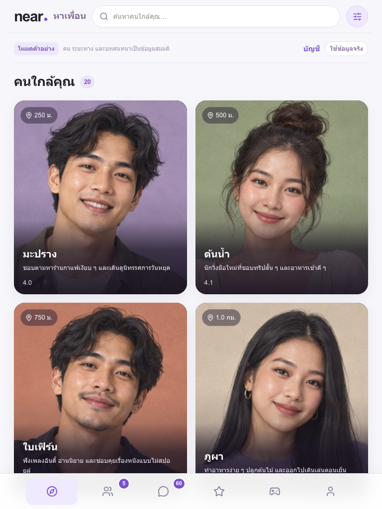
Production BEFORE — live capture 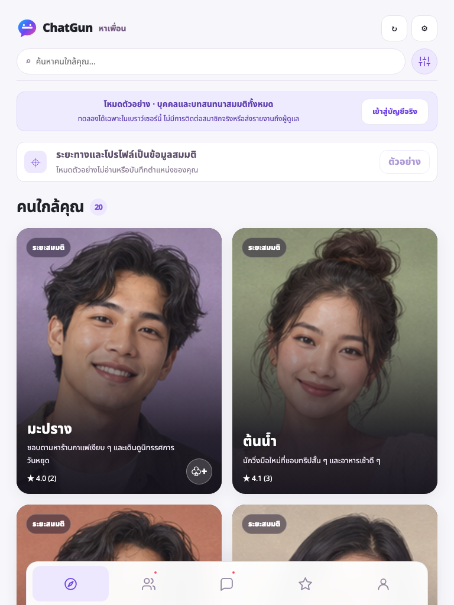
Corrected ChatGun — browser capture Pixel diagnostics: 11.31% unmasked pixels differ; not a parity score friends · 768px Portrait-based requests and Friends restored; 5 requests and 10 friendships retained.
Canonical NEAR v91 — rendered source, shared public fiction Production BEFORE — live capture Corrected ChatGun — browser capture Pixel diagnostics: 19.12% unmasked pixels differ; not a parity score inbox · 768px Single inbox, circular portraits, preview and unread state; no two-pane dashboard.
Canonical NEAR v91 — rendered source, shared public fiction 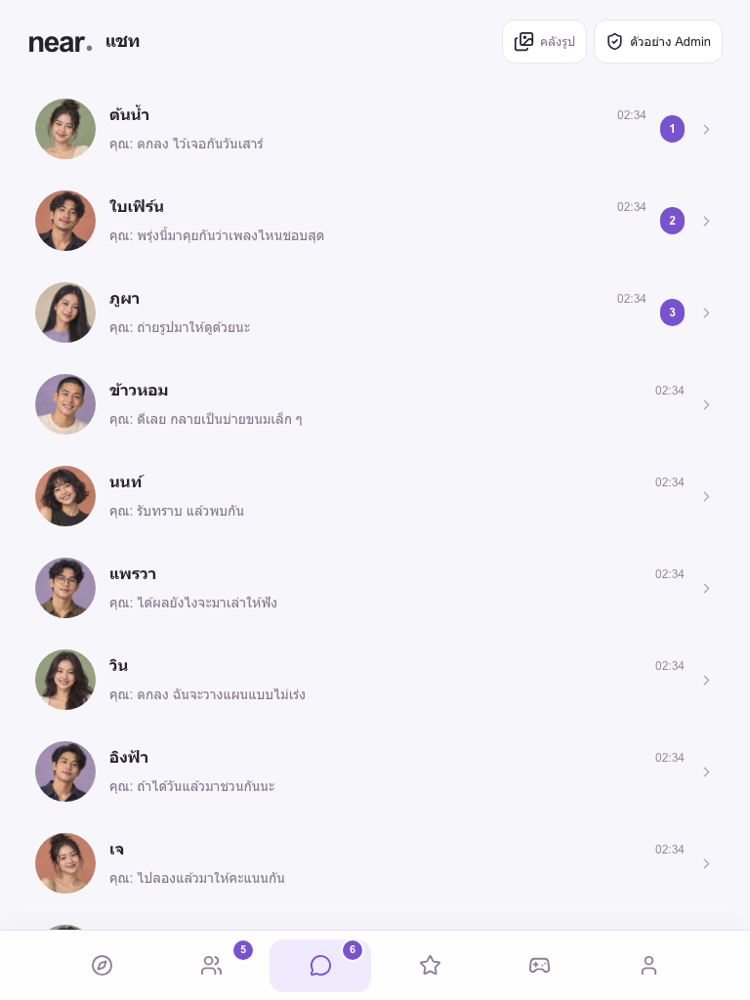
Production BEFORE — live capture Corrected ChatGun — browser capture Pixel diagnostics: 5.19% unmasked pixels differ; not a parity score chat · 768px Full-height thread, safety disclosure and composer above fixed navigation.
Canonical NEAR v91 — rendered source, shared public fiction Production BEFORE — live capture Corrected ChatGun — browser capture 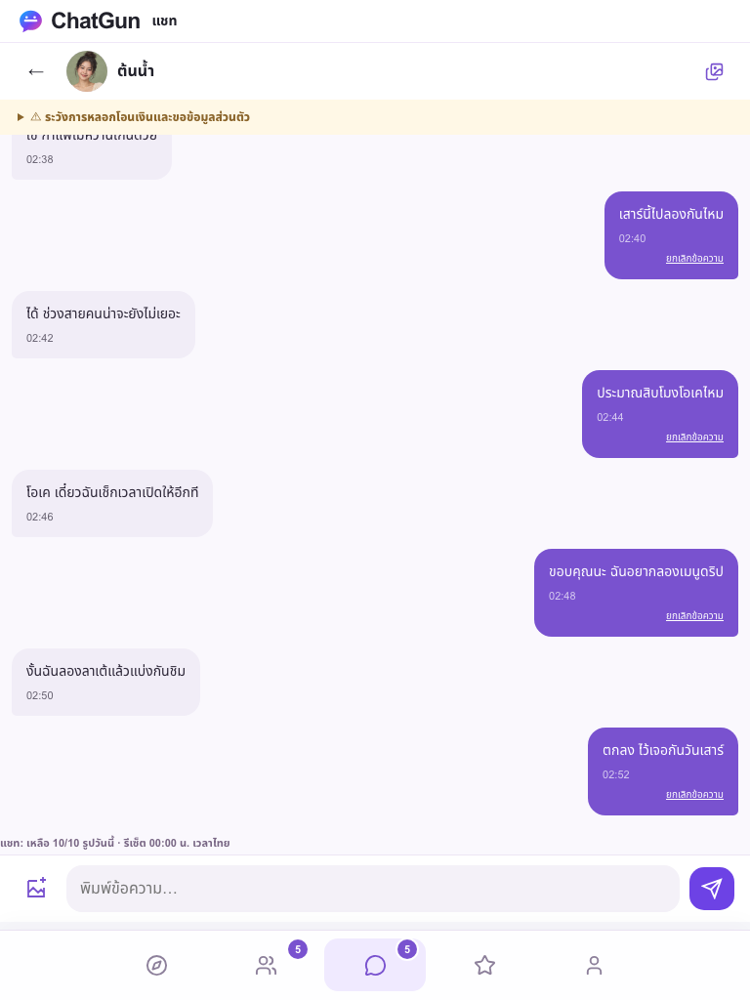
Pixel diagnostics: 15.88% unmasked pixels differ; not a parity score profile · 768px Canonical compact profile form plus required safety/notification controls.
Pixel diagnostics: 11.54% unmasked pixels differ; not a parity score 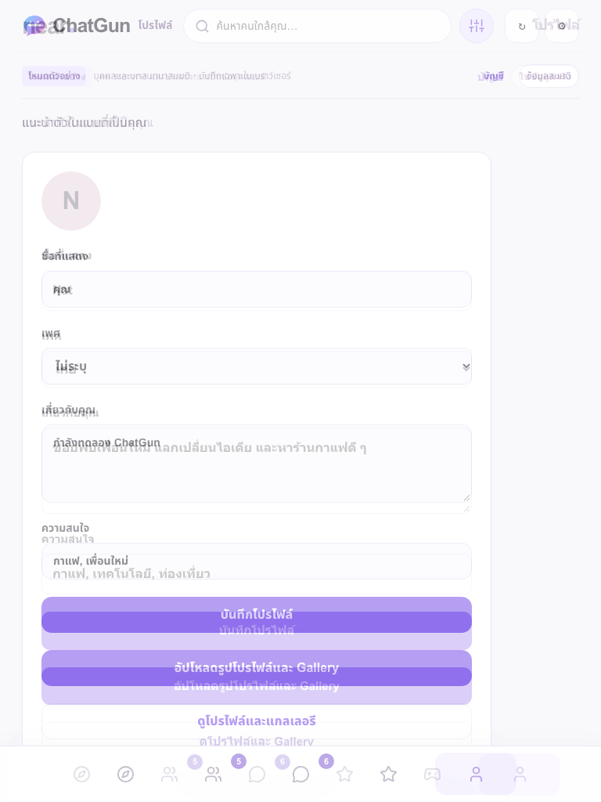
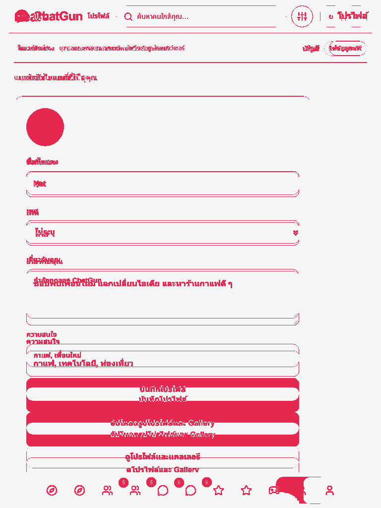
reviews · 768px Private review hierarchy and ordered cards; no public disclosure of review contents.
Canonical NEAR v91 — rendered source, shared public fiction 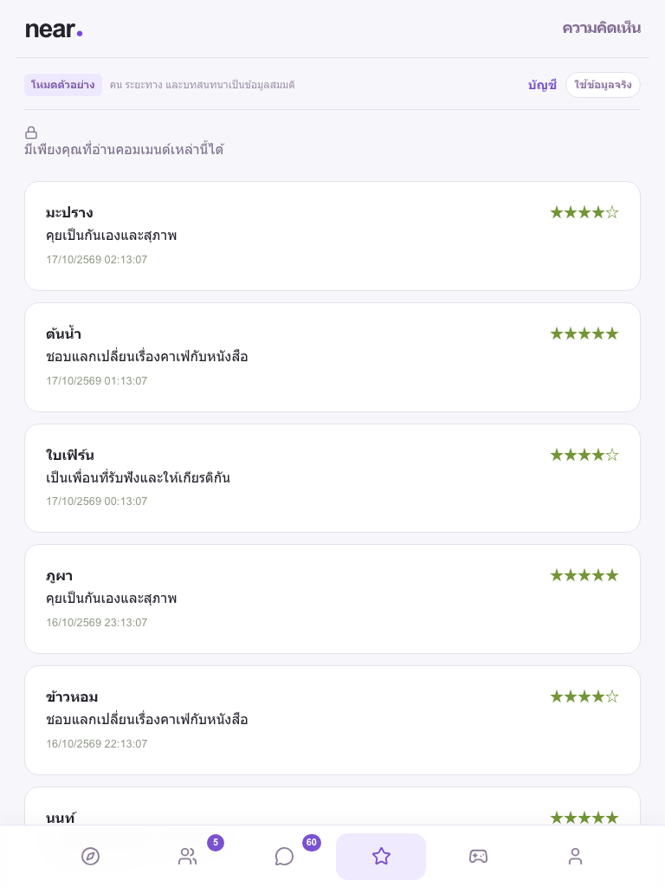
Production BEFORE — live capture 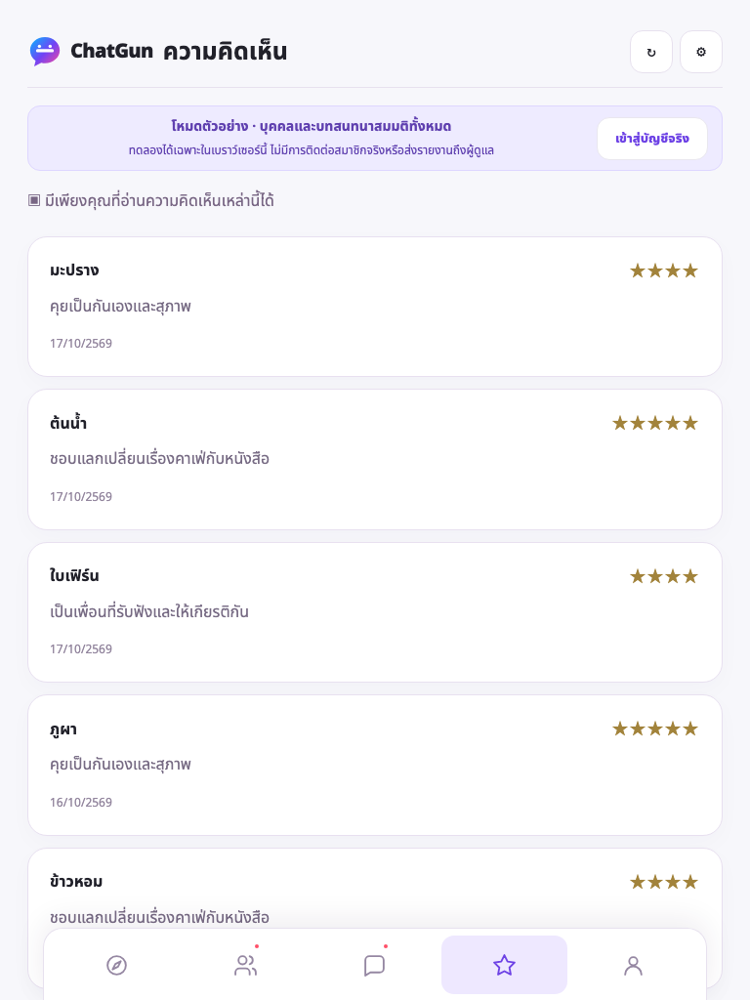
Corrected ChatGun — browser capture Pixel diagnostics: 7.23% unmasked pixels differ; not a parity score
member-profile · 768px Full-bleed portrait, original shade/facts/interests/actions. Safety controls separated; content kept above navigation.
Canonical NEAR v91 — rendered source, shared public fiction Production BEFORE — live capture Corrected ChatGun — browser capture Pixel diagnostics: 22.16% unmasked pixels differ; not a parity score
member-gallery · 768px Gallery summary, portrait, facts, interest chips and three-column tiles restored.
Canonical NEAR v91 — rendered source, shared public fiction Production BEFORE — live capture Corrected ChatGun — browser capture Pixel diagnostics: 8.72% unmasked pixels differ; not a parity score
gallery-post · 768px Original post owner/image/social/navigation composition; private-comment and synthetic notices preserved.
Canonical NEAR v91 — rendered source, shared public fiction Production BEFORE — live capture Corrected ChatGun — browser capture Pixel diagnostics: 28.49% unmasked pixels differ; not a parity score
login · 768px Canonical auth shell, typography and canvas. Three OAuth providers replace original ChatGPT login; real Production OAuth remains gated.
Canonical NEAR v91 — rendered source, shared public fiction Production BEFORE — live capture Corrected ChatGun — browser capture Pixel diagnostics: 7.07% unmasked pixels differ; not a parity score
register · 768px Different workflows: NEAR registration vs ChatGun post-OAuth acceptance. These are not pixel-equivalent states.
Canonical NEAR v91 — rendered source, shared public fiction Production BEFORE — live capture Corrected ChatGun — browser capture Pixel diagnostics: 6.82% unmasked pixels differ; not a parity score
search-empty · 768px Original empty-state placement with a working clear-filters action.
Canonical NEAR v91 — rendered source, shared public fiction Production BEFORE — live capture Corrected ChatGun — browser capture Pixel diagnostics: 5.82% unmasked pixels differ; not a parity score
filters · 768px Canonical centred responsive filter dialog; keyboard Escape and focus handling.
Canonical NEAR v91 — rendered source, shared public fiction Production BEFORE — live capture Corrected ChatGun — browser capture Pixel diagnostics: 9.94% unmasked pixels differ; not a parity score
friends-empty · 768px Empty relationship state; no original or staging records removed.
Canonical NEAR v91 — rendered source, shared public fiction Production BEFORE — live capture Corrected ChatGun — browser capture Pixel diagnostics: 3.82% unmasked pixels differ; not a parity score
inbox-empty · 768px Empty inbox state in isolated browser fiction.
Canonical NEAR v91 — rendered source, shared public fiction Production BEFORE — live capture Corrected ChatGun — browser capture Pixel diagnostics: 1.45% unmasked pixels differ; not a parity score
reviews-empty · 768px Private reviews empty state.
Canonical NEAR v91 — rendered source, shared public fiction Production BEFORE — live capture Corrected ChatGun — browser capture Pixel diagnostics: 2.86% unmasked pixels differ; not a parity score
own-gallery-empty · 768px Empty own-gallery/settings fixture, no stored media removed.
Canonical NEAR v91 — rendered source, shared public fiction Production BEFORE — live capture Corrected ChatGun — browser capture Pixel diagnostics: 6.90% unmasked pixels differ; not a parity score offline · 768px Offline notification and recovery; browser-only fixture.
Canonical NEAR v91 — rendered source, shared public fiction Production BEFORE — live capture Corrected ChatGun — browser capture Pixel diagnostics: 60.83% unmasked pixels differ; not a parity score
upload-photos · 768px Dedicated profile/gallery image management route restored; ChatGun quota and moderation disclosures retained.
Canonical NEAR v91 — rendered source, shared public fiction Production BEFORE — live capture Corrected ChatGun — browser capture Pixel diagnostics: 6.90% unmasked pixels differ; not a parity score image-picker · 768px Canonical inline recent-image carousel and upload control; reuses existing private-media authorization.
Canonical NEAR v91 — rendered source, shared public fiction Production BEFORE — live capture Corrected ChatGun — browser capture Pixel diagnostics: 13.91% unmasked pixels differ; not a parity score
chat-gallery-empty · 768px Recent chat-image library with explicit friend selection for forwarding, not an immediate accidental send.
Canonical NEAR v91 — rendered source, shared public fiction Production BEFORE — live capture Corrected ChatGun — browser capture Pixel diagnostics: 12.16% unmasked pixels differ; not a parity score
discovery · 1440px Canonical column count, card dimensions, crop, gradient and compact tools restored. ChatGun logo, fictional distance labels and no Game are intentional.
Canonical NEAR v91 — rendered source, shared public fiction Production BEFORE — live capture Corrected ChatGun — browser capture Pixel diagnostics: 10.48% unmasked pixels differ; not a parity score
friends · 1440px Portrait-based requests and Friends restored; 5 requests and 10 friendships retained.
Canonical NEAR v91 — rendered source, shared public fiction Production BEFORE — live capture Corrected ChatGun — browser capture Pixel diagnostics: 10.37% unmasked pixels differ; not a parity score
inbox · 1440px Single inbox, circular portraits, preview and unread state; no two-pane dashboard.
Canonical NEAR v91 — rendered source, shared public fiction Production BEFORE — live capture Corrected ChatGun — browser capture Pixel diagnostics: 6.00% unmasked pixels differ; not a parity score
chat · 1440px Full-height thread, safety disclosure and composer above fixed navigation.
Canonical NEAR v91 — rendered source, shared public fiction Production BEFORE — live capture Corrected ChatGun — browser capture Pixel diagnostics: 10.14% unmasked pixels differ; not a parity score
profile · 1440px Canonical compact profile form plus required safety/notification controls.
Canonical NEAR v91 — rendered source, shared public fiction Production BEFORE — live capture Corrected ChatGun — browser capture Pixel diagnostics: 6.26% unmasked pixels differ; not a parity score
reviews · 1440px Private review hierarchy and ordered cards; no public disclosure of review contents.
Canonical NEAR v91 — rendered source, shared public fiction Production BEFORE — live capture Corrected ChatGun — browser capture Pixel diagnostics: 4.59% unmasked pixels differ; not a parity score
member-profile · 1440px Full-bleed portrait, original shade/facts/interests/actions. Safety controls separated; content kept above navigation.
Canonical NEAR v91 — rendered source, shared public fiction Production BEFORE — live capture Corrected ChatGun — browser capture Pixel diagnostics: 10.90% unmasked pixels differ; not a parity score
member-gallery · 1440px Gallery summary, portrait, facts, interest chips and three-column tiles restored.
Canonical NEAR v91 — rendered source, shared public fiction Production BEFORE — live capture Corrected ChatGun — browser capture Pixel diagnostics: 5.24% unmasked pixels differ; not a parity score
gallery-post · 1440px Original post owner/image/social/navigation composition; private-comment and synthetic notices preserved.
Canonical NEAR v91 — rendered source, shared public fiction Production BEFORE — live capture Corrected ChatGun — browser capture Pixel diagnostics: 7.18% unmasked pixels differ; not a parity score
login · 1440px Canonical auth shell, typography and canvas. Three OAuth providers replace original ChatGPT login; real Production OAuth remains gated.
Canonical NEAR v91 — rendered source, shared public fiction Production BEFORE — live capture Corrected ChatGun — browser capture Pixel diagnostics: 3.89% unmasked pixels differ; not a parity score
register · 1440px Different workflows: NEAR registration vs ChatGun post-OAuth acceptance. These are not pixel-equivalent states.
Canonical NEAR v91 — rendered source, shared public fiction Production BEFORE — live capture Corrected ChatGun — browser capture Pixel diagnostics: 3.77% unmasked pixels differ; not a parity score
search-empty · 1440px Original empty-state placement with a working clear-filters action.
Canonical NEAR v91 — rendered source, shared public fiction Production BEFORE — live capture Corrected ChatGun — browser capture Pixel diagnostics: 3.20% unmasked pixels differ; not a parity score
filters · 1440px Canonical centred responsive filter dialog; keyboard Escape and focus handling.
Canonical NEAR v91 — rendered source, shared public fiction Production BEFORE — live capture Corrected ChatGun — browser capture Pixel diagnostics: 10.54% unmasked pixels differ; not a parity score
friends-empty · 1440px Empty relationship state; no original or staging records removed.
Canonical NEAR v91 — rendered source, shared public fiction Production BEFORE — live capture Corrected ChatGun — browser capture Pixel diagnostics: 2.10% unmasked pixels differ; not a parity score
inbox-empty · 1440px Empty inbox state in isolated browser fiction.
Canonical NEAR v91 — rendered source, shared public fiction Production BEFORE — live capture Corrected ChatGun — browser capture Pixel diagnostics: 0.86% unmasked pixels differ; not a parity score
reviews-empty · 1440px Private reviews empty state.
Canonical NEAR v91 — rendered source, shared public fiction Production BEFORE — live capture Corrected ChatGun — browser capture Pixel diagnostics: 1.65% unmasked pixels differ; not a parity score
own-gallery-empty · 1440px Empty own-gallery/settings fixture, no stored media removed.
Canonical NEAR v91 — rendered source, shared public fiction Production BEFORE — live capture Corrected ChatGun — browser capture Pixel diagnostics: 1.89% unmasked pixels differ; not a parity score offline · 1440px Offline notification and recovery; browser-only fixture.
Canonical NEAR v91 — rendered source, shared public fiction Production BEFORE — live capture Corrected ChatGun — browser capture Pixel diagnostics: 49.03% unmasked pixels differ; not a parity score
upload-photos · 1440px Dedicated profile/gallery image management route restored; ChatGun quota and moderation disclosures retained.
Canonical NEAR v91 — rendered source, shared public fiction Production BEFORE — live capture Corrected ChatGun — browser capture Pixel diagnostics: 1.89% unmasked pixels differ; not a parity score
image-picker · 1440px Canonical inline recent-image carousel and upload control; reuses existing private-media authorization.
Canonical NEAR v91 — rendered source, shared public fiction Production BEFORE — live capture Corrected ChatGun — browser capture Pixel diagnostics: 8.88% unmasked pixels differ; not a parity score
chat-gallery-empty · 1440px Recent chat-image library with explicit friend selection for forwarding, not an immediate accidental send.
Canonical NEAR v91 — rendered source, shared public fiction Production BEFORE — live capture Corrected ChatGun — browser capture Pixel diagnostics: 12.64% unmasked pixels differ; not a parity score